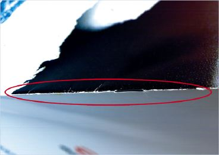
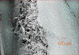
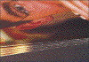
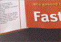
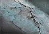
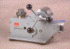
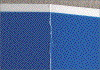
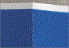

STRICHBRECHEN IM FALZ
|
Beim Strichbrechen im Falz handelt es sich um
ein Aufbrechen der äußeren Schichten des
Papiers, ohne dass ein Bruch des Papiergefüges
bzw. der Falzkante entsteht. Durch lokale
Überdehnungen nach einem mechanischen
Falzvorgang kommt es zu Rissen in der Druckfarben-
und Strichschicht. Negative, optisch störende
Effekte ergeben sich speziell dann, wenn der
Falzbereich mit einer dunkleren Farbe als die
Eigenfarbe des Papiers bzw. des Strichs
vollflächig bedruckt ist (Abb. 1 und 2).
|

|
Abb. 1: Strichbrechen im Falz.
|
|
|
|
Mögliche Ursachen:
|
|

|
|
Abb. 2: Vergrößerte Darstellung des
Strichbrechen im Falz (REM-Aufnahme).
|
|
|
|

|
|
Abb. 3: Wegen Strichbrechen beanstandete
Auflage.
|
|
|
|

|
|
Abb. 4: Ansicht des Umschlages im
Falzbereich.
|
|
|
|
|
|
Abb. 5: Ansicht des nicht beanstandeten
Nachdrucks im Falzbereich.
|
|
|
|

|
|
Abb. 6: REM-Aufnahme vom Falzbereich des
Nachdrucks.
|
|
|
|

|
|
Abb. 7: Laborfalzgerät FOGRA FI.
|
|
|
|

|
|
Abb. 8: Papier 1 mit starkem Strichbrechen im
Falz.
|
|
|
|

|
|
Abb. 9: Papier 2 mit deutlich geringerer Neigung
zum Strichbrechen.
|
|
|
|
|
Die Ursachen für das Strichbrechen im Falz sind
äußerst vielfältig und komplex.
Grundsätzlich kommen zwei Haupteinflüsse
infrage:
1. Papier- bzw. Kartoneinfluss:
Im Vergleich von gestrichenen Papier- bzw.
Kartonqualitäten können hinsichtlich des
Strichbrechens gravierende Unterschiede auftreten. Die
Ursachen für Probleme, die auf den Bedruckstoff
zurückzuführen sind, liegen bei der
Rohstoffauswahl, bei der Rohpapiererzeugung und speziell
auch bei der Oberflächenveredelung. Insbesondere die
Einflüsse der Leimpresse, der Strichzusammensetzung,
der Strichmenge und die des Rohstoffs Stärke sind
hierbei hervorzuheben. Als Hilfsgrößen zur
Beurteilung und Vorhersage des Falzverhaltens von
Bedruckstoffen werden allgemein Laborfalzungen oder
Größen wie die Dehnfähigkeit,
Kompressibilität, Zugfestigkeitsvergleich vor bzw. nach
Falzung und ähnliche Kriterien zur Charakterisierung
der Sprödigkeit und Elastizität des Faser- bzw.
Strichgefüges herangezogen. Besonders bei
Heatset-Papieren spielt die Neigung zur Versprödung des
Strichs durch die Heißlufttrocknung ebenfalls eine
große Rolle für das Strichbrechen. In diesem
Zusammenhang ist auch die sog. Restfestigkeit des Papiers
(siehe Falzbrechen im Rollenoffset) entscheidend, weil bei
zu geringer Restfestigkeit das Papier im Gefüge
aufbricht und somit auch zum Strichbrechen führt.
2. Verarbeitungsparameter beim Rillen und Falzen:
Diesem Punkt ist eine sehr hohe Bedeutung zuzuschreiben,
weil durch Fehleinstellungen beim Rill- oder Falzvorgang
auch bei Papieren bzw. Kartons mit sehr guten
Falzeigenschaften vermehrt Strichbrechen auftreten kann.
Insbesondere beim Rillvorgang kann durch zu breite
Rillmesser, durch zu tiefes Eindringen des Rillmessers oder
durch eine falsche Ausrichtung der Rillwulst eine
übermäßige Beanspruchung des Bedruckstoffes
auftreten.
Zu hoher Anpressdruck der Falz- und Transportwalzen beim
Falzen führt ebenfalls verstärkt zum
Strichbrechen.
|
Mögliche Abhilfen:
|
|
Das Strichbrechen ist beim Falzen von gestrichenen Sorten
generell nur schwer vermeidbar, kann aber durch die
nachfolgend genannten Maßnahmen zumindest minimiert
werden.
1. Papier- bzw. Kartoneinfluss:
Dieser Einfluss lässt sich nur durch gezielte Versuche
vor der Produktion minimieren. Durch Falzversuche z. B.
unter Verwendung eines Laborfalzgerätes (siehe
Beispiel) lässt sich ein objektiver Vergleich zwischen
mehreren Bedruckstoffen vornehmen. Mit diesem
Laborfalzgerät ist es möglich, den Falzspalt auf
die jeweilige Papierstärke zu fixieren, um dann erst
die Falzkraft einzustellen. So können alle
Bedruckstoffe unter gleichen Falzbedingungen vergleichend
geprüft werden. In Verbindung mit einem Trockenschrank
oder einem Labor-Heißlufttrockner lassen sich auch die
Falzeigenschaften von Heatset-Papieren vergleichend
prüfen. Das Falzergebnis kann dann visuell oder
makroskopisch beurteilt werden.
2. Verarbeitungsparameter beim Rillen und Falzen:
Um das Falzverhalten von Bedruckstoffen zu optimieren, ist
es ab einer flächenbezogenen Masse von
170 g/m2 grundsätzlich empfehlenswert,
vor dem Falzen zu rillen (siehe Kapitel: Probleme bei
Rillungen). Die Rillung wird dabei nicht nur aus
funktionalen sondern auch aus ästhetischen Gründen
vorgenommen. Bei der Rillung handelt es sich um eine
gezielte Reduzierung des Biegewiderstandes ohne dem zu
rillenden Material einen Festigkeitsverlust zuzufügen.
Voraussetzung dafür ist eine optimale Abstimmung aller
Rillparameter. Diese sind (siehe auch Kapitel: Probleme bei
Rillungen):
- Breite des Rillmessers bzw. der Rillung im Verhältnis
zur Papier- bzw. Kartondicke
- Die Rilltiefe
- Die Rillbarkeit des Materials
- Eine exakte Zentrierung der Rilllinie - Eine ausreichend
hohe Lagenfestigkeit des Kartons, um eine
qualitätsgerechte Wulstbildung zu sichern.
- Die richtige Ausrichtung der Rillwulst. Als Grundregel
gilt dabei, dass die Rillwulst nach innen geformt ist.
Beim Falzvorgang lässt sich durch eine sensible
Einstellung der Falzparameter (Geschwindigkeit, Falzdruck)
eine Verringerung des Strichbrechens erzielen.
Bei Rollenoffsetprodukten ist es empfehlenswert, das nach
der Heatset-Trocknung ausgetrocknete Papier zumindest im
Falzbereich zu befeuchten (fold softening). Dieser Vorgang
kann inline, also kurz vor dem Falzapparat in der
Rollenoffsetmaschine, oder bei Planoauslage auch offline in
der Falzmaschine geschehen. Durch das fold softening wird -
wie dem Namen zu entnehmen ist - das Papier bzw. die
Oberfläche des Bedruckstoffes befeuchtet, wodurch das
ausgetrocknete Papier geschmeidiger wird und sich
problemloser falzen lässt.
Werden vollflächig bedruckte Umschläge bei nicht
„überlaufendem“ Motiv (Vollfläche
verläuft nur bis zum Falz) gerillt und gefalzt, ist es
empfehlenswert, wenn die bedruckte Fläche kurz vor dem
Falzbereich endet. Das Strichbrechen wird dadurch weniger
deutlich sichtbar.
|
Beispiel(e):
|
|
Strichbrechen im Falz bei Rollenoffsetdrucken:
Bei einem 4/4-farbigen, im Heatset-Rollenoffset gedruckten
Auftrag wurde die gesamte Auflage in einer Höhe von
45.000 Exemplaren wegen Strichbrechen im Falz reklamiert
(Abb. 3). Bei dem Motiv des Broschurumschlages handelte es
sich bei der einen Hälfte um ein vollflächig
bedrucktes Titelbild. Die andere Hälfte des Umschlages
bestand aus vierfarbigen Abbildungen ohne
Hintergrundfläche. Die vollflächig bedruckte
Hälfte zeigte dabei etwas über den Falzbereich
hinaus (Abb. 4).
Für den vom Kunden geforderten Nachdruck wurde
beschlossen, die vollflächig bedruckte Fläche kurz
vor dem Falz enden zu lassen (Abb. 5). Nach dieser
Maßnahme wurde die Auflage vom Kunden akzeptiert und
konnte ausgeliefert werden.
Bei Betrachtung des Falzbereiches dieser Auflage im
Rasterelektronenmikroskop wurde aber deutlich, dass das
Strichbrechen nach wie vor aufgetreten ist (Abb. 6).
Nachdem dieser Bereich jedoch nicht bedruckt wurde, war das
Strichbrechen weniger auffallend.
Vergleichsuntersuchung zwischen 2 Papiersorten
hinsichtlich der Neigung zum Strichbrechen:
Der FOGRA wurden Muster von 2 gestrichenen Papiersorten
übersandt, um diese als Vortest für einen
größeren Druckauftrag hinsichtlich ihrer Neigung
zum Strichbrechen beim Falzen zu untersuchen.
Um einen besseren Vergleich zu erzielen bzw. sichtbar zu
machen, wurden beide Papiermuster im
Mehrzweckprobedruckgerät System prüfbau
zunächst vollflächig bedruckt. Nach
24-stündiger Trocknungszeit der Drucke erfolgten die
Falztests. Diese wurden im FOGRA-Laborfalzgerät FI
vorgenommen (Abb. 7).
Der Walzenspalt wurde dabei jeweils auf die doppelte
Papierstärke eingestellt, der Falzliniendruck betrug 80
N/cm.
Die Abbildungen 8 und 9 zeigen die Ergebnisse der Falztests.
Abb. 8 zeigt dabei für die Papiersorte 1 ein starkes
Strichbrechen im Falz. Papier 2 ließ demgegenüber
unter vollkommen identischen Laborbedingungen ein relativ
gutes Falzergebnis, also nur sehr geringes Strichbrechen,
erkennen (Abb. 9).
|
Allgemeine Hinweise:
|
|
Für den Reklamationsfall:
Druckausfallmuster sicherstellen.
Unbedruckte Papier- bzw. Kartonmuster und unbedruckte
Vergleichsmuster sicherstellen (ca. 20 Blatt DIN A4). An
diesen Mustern können im Labor vergleichende
Falzversuche und Papierprüfungen vorgenommen
werden.
Produktionsdaten protokollieren.
Ergänzende Literatur:
GLIESE, T.:
Fold Cracking in Coated Woodfree Papers.
Advances in Printing Science and Technology - Advances in
Paper and Board Performance, Proceedings of the 27. Research
Conference of IARIGAI, Sept. 2000, Graz - Tagungsbericht
MERTENS, K.:
Falzen und Rillen.
Alfeld: Sappi Fine Paper Europe, 2001,
Informationsbroschüre
STADLER, P.; WIMMER, M.:
Untersuchung der Kartonrillbarkeit in
Umschlaganlegestationen von Klebebindeanlagen.
Wiesbaden: Bundesverband Druck E. V., 1992 -
Informationen
|
|
|
|
|
|
|
Kontakt:
zins@fogra.org
|
Str-zin-200112
|